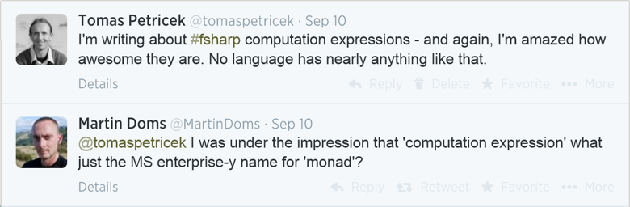

Full name: index.printAllPrices
Full name: index.printAllPrices
Full name: Microsoft.FSharp.Core.ExtraTopLevelOperators.async
Full name: index.printAllPrices
Full name: index.putString
val string : value:'T -> string
Full name: Microsoft.FSharp.Core.Operators.string
--------------------
type string = System.String
Full name: Microsoft.FSharp.Core.string
Full name: index.putInt
val int : value:'T -> int (requires member op_Explicit)
Full name: Microsoft.FSharp.Core.Operators.int
--------------------
type int = int32
Full name: Microsoft.FSharp.Core.int
--------------------
type int<'Measure> = int
Full name: Microsoft.FSharp.Core.int<_>
Full name: index.getString
Changing how we
think about programming
From concurrency to data science
Tomas Petricek
email: t.petricek@kent.ac.uk
twitter: @tomaspetricek
Background
What are important programming
research problems?
Programming research
What kind of science is computer science
Experiments to confirm hypotheses?
Build systems like engineers?
Prove theorems about theories?
Even physics is not as obvious!
Programming research

Solving hard problems
- Verified operating systems
- Make JavaScript as fast as C
- Good scientific problems
Changing how we think
- Program as a formal linguistic entity
- Types as sets of values PLDI 2016 Onward! 2015
- Philosophy of science challenge AISB 2014
Changing how we think
From concurrency to data science
Computations for asynchronous programming
Unified notion of context dependence
Types for working with external data sources
Programming as human data interaction
Concurrency
Non-standard kinds of computations
F# computation expressions

Abstractions and syntax for reactive, concurrent and asynchronous programming.
Non-standard computations

Monads in programming
- Structure effectful computations
- Language support in Haskell, F#
- Inspired LINQ, JavaScript async
What are monads
- Mathematical abstraction with laws
- Social and cultural artifact Programming 2018
- Non-standard computation PADL 2014
Non-standard computations
Start with blocking imperative F# program
1: 2: 3: 4: 5: |
|
Non-standard computations
Non-blocking code using async workflows
1: 2: 3: 4: 5: |
|
Non-standard computations
Non-blocking code using async workflows
1: 2: 3: 4: 5: |
|
Demo
Async workflows and async sequences PADL 2011a
Non-standard computations
Join calculus using pattern matching
1: 2: 3: 4: 5: 6: 7: 8: |
|
Non-standard computations
Computation expressions are not just monads
Syntax to support monad-like abstractions
Further syntax requires further operations PADL 2014
Non-standard pattern matching PADL 2011b Haskell 2011
Different way of thinking about computations
Coeffects
Unified notion of context dependence
Context dependence
Neighbourhood in stencil computations
1: 2: 3: |
|
Type system for coeffects

Effect systems
- What program does to the world
- Attached to program output
- Output, state, errors
Coeffect systems ICALP 2013ICFP 2014
- What it requires from the world
- Attached to program input
- Neighbourhood, implicit parameters
Simple type systems
Typing rule
\(x:{\color{ltyp} \text{int}},~ y:{\color{ltyp} \text{int}} \vdash x+y : {\color{ltyp} \text{int}}\)
Reading
- Given a free variable context
- Expression has a certain type
Effect type systems
Typing rule
\(hello : {\color{ltyp} \text{string}} \vdash {\color{lkvd} \text{print}}~hello : {\color{ltyp} \text{unit}} {\scriptsize \;\&\;} {\color{leff} \{ \text{io} \} }\)
Reading
- Given a free variable context
- Expression has a type and produces effects
Coeffect type systems
Typing rule
\(deadline : {\color{ltyp} \text{time}} {\scriptsize \;@\;} {\color{lcoeff} \{ \text{clock} \} } \vdash {\color{lkvd} \text{now}} \geq deadline : {\color{ltyp} \text{bool}}\)
Reading
- Given variables and additional context
- Expression has a certain type
Unified notion of context
Applications of coeffects
- Available network resources
- Dynamically scoped variables
- Dataflow and liveness
What do they share
- Attach information to context
- Interesting functions treatment
- Semantics based on comonads
Ordinary function
Typing rule
\(\dfrac {\Gamma, x:{\color{ltyp} \tau_1} \vdash e : {\color{ltyp} \tau_2}} {\Gamma \vdash {\color{lkvd} \text{fun}}~x \rightarrow e : {\color{ltyp} \tau_1} \rightarrow {\color{ltyp} \tau_2}}\)
Explanation
- If body can be typed in a context
- Then lambda has a function type
Effectful functions
Typing rule
\(\dfrac {\Gamma, x:{\color{ltyp} \tau_1} \vdash e : {\color{ltyp} \tau_2 } {\scriptsize \;\&\;} {\color{leff} r} } {\Gamma \vdash {\color{lkvd} \text{fun}}~x \rightarrow e : {\color{ltyp} \tau_1} \xrightarrow{~\color{leff} r~} {\color{ltyp} \tau_2} {\scriptsize \;\&\;} {\color{leff} \emptyset}}\)
Explanation
- If evaluating body produces effects
- Effects will happen on function call
Coeffectful functions
Typing rule
\(\dfrac {\Gamma, x:{\color{ltyp} \tau_1} {\scriptsize \;@\;} {\color{lcoeff} r\wedge s} \vdash e : {\color{ltyp} \tau_2 } } {\Gamma {\scriptsize \;@\;} {\color{lcoeff} r} \vdash {\color{lkvd} \text{fun}}~x \rightarrow e : {\color{ltyp} \tau_1} \xrightarrow{~\color{lcoeff} s~} {\color{ltyp} \tau_2}}\)
Explanation
- If body requires certain context to run
- It can come from declaration-site or call-site
Demo
Dataflow coeffects (see tomasp.net/coeffects)
Coeffects
Unified notion of context-dependence
What is the context in which programs run?
Variables, resources, history, etc. ICALP 2013
Per-context and per-variable definitions ICFP 2014
Algebra of (co)effect annotations Festschrift 2016
Type providers
External data as part of your type system
Reading data
Unsafe dynamic access in a typed language
1: 2: 3: 4: 5: 6: 7: |
|
Reading data
Unsafe dynamic access in a typed language
1: 2: 3: 4: 5: 6: 7: |
|
Reading data
Accessing data from external data sources
Languages do not understand data
There is rarely explicit schema
Manually define types to capture it
Easier in dynamic languages
Type providers
\(\emptyset \vdash e : \tau\)
Type providers
\(\pi(~~~~~~~) \vdash e : \tau\)

Demo
Reading data from an RSS feed DDFP 2013 PLDI 2016
F# Data library
Type providers for structured data
Structural shape inference
Language integration via type providers
Relative type safety
Pragmatic choices for usability
Structural shape inference
{title : string, author : {age : int}} {author : {age : float}}
{ title : option<string>, author : {age : float} }
Structural shape inference
{ coordinates : {lng:num, lat:num} } string
{ coordinates : {lng:num, lat:num} } + string
Relative type safety
Well typed programs do not go wrong...
Relative type safety
...as long as the world is well-behaved!
Relative type safety
Safety guarantees provided by F# Data
Given representative samples and an input value
\(S(d)\sqsubset S(d_1, \ldots, d_n)\)
Any program written using a type provider reduces
\(e_{user}[x\leftarrow {\color{mc}\text{new}}~C(d)] \rightsquigarrow^* v\)
Data science
Programming as human data interaction
Data journalism
Can we make data science easy for journalists?
Aggregating data
Athletes by number of golds from Rio 2016
1: 2: 3: 4: 5: 6: |
|
Aggregating data
Language features you need to know
Python dictionaries {"key": value}
Generalised indexers .[ condition ]
Operation names sort_values
Data column names "Athlete"
Demo
The Gamma (see gamma.turing.ac.uk) ECOOP 2017
Dot-driven development
Complex logic via simple member access
Type providers for member generation
Cognitive cost of interactions
Fancy types for the masses!
Adding spreadsheet-like live experience
Fancy types for the masses
Row types to track names and types of fields
\[\definecolor{cc}{RGB}{204,82,34} \definecolor{mc}{RGB}{0,0,153} \frac {\Gamma \vdash e : {\color{cc}[f_1:\tau_1, \ldots, f_n:\tau_n]}} {\Gamma \vdash e.\text{drop}~f_i : {\color{cc} [f_1:\tau_1, \ldots, f_{i-1}:\tau_{i-1}, f_{i+1}:\tau_{i+1}, \ldots, f_n:\tau_n]}}\]
Embed row types in provided nominal types
\[\frac {\Gamma \vdash e : {\color{mc} C_1}} {\Gamma \vdash e.\text{drop}~f_i : {\color{mc} C_2}} \quad{\small \text{where}}\]
\[\begin{array}{l} \\[-0.5em] {fields({\color{mc} C_2}) = {\color{mc} \{f_1:\tau_1, \ldots, f_{i-1}:\tau_{i-1}, f_{i+1}:\tau_{i+1}, \ldots, f_n:\tau_n\}}}\\ {fields({\color{mc} C_1}) = {\color{mc} \{f_1:\tau_1, \ldots, f_n:\tau_n\}}} \end{array}\]
Fancy types for the masses
Powerful idea that works in other contexts
Row types and phantom types
Session types for communication
Add your own fancy type here!
SpreadsheetsEasy to use Simple problems Not reproducible |
ProgrammingNeeds expert skills Internet-scale Open & transparent |


What makes spreadsheets so easy to learn and use?
How can programming tools learn from Excel?
Think of programming as interaction!
Demo
Live previews (see gamma.turing.ac.uk) ECOOP 2017
Summary
Changing how we think about programming
Changing how we think
From concurrency to data science
- Non-standard computations, context, types
- Programming as interaction with data
- Can we change how we think with just papers?
Tomas Petricek
t.petricek@kent.ac.uk | @tomaspetricek
References
From concurrency to data science
Philosophy and history
Programming 2018 T. Petricek. What we talk about when we talk about monads. The Art, Science, and Engineering of Programming, Vol. 2, Issue 3, Article 12.
Onward 2015 Tomas Petricek. Against a universal definition of 'type'. In Onward! pp. 254-266, ISBN 9781450336888, ACM 2015
AISB 2014 T. Petricek. What can programming language research learn from the philosophy of science? In proceedings of AISB Conference, selected papers, ed. Rodger Kibble, 2014.
Computation expressions
PADL 2014 T. Petricek and D. Syme. The F# computation expression Zoo. In proceedings of PADL, pp. 33-48, Springer 2014.
Haskell 2011 T. Petricek, Alan Mycroft and Don Syme. Extending monads with pattern matching. In proceedings of Haskell Symposium, ACM SIGPLAN Notices. vol. 46. no. 12. ACM, 2011.
PADL 2011a D. Syme, T. Petricek and D. Lomov. The F# asynchronous programming model. In proceedings of PADL workshop, pp.205–219, Springer Berlin Heidelberg 2011.
PADL 2011b T. Petricek and D. Syme. Joinads: a retargetable control-flow construct for reactive, parallel and concurrent programming. In proceedings of PADL, pp.205–219, Springer 2011.
Coeffects
ICFP 2014 T. Petricek, D. Orchard and A. Mycroft. Coeffects: A calculus of context dependent computation. In proceedings of ICFP, pp. 123–135, ISBN 9781450328739, ACM 2014.
ICALP 2013 T. Petricek, D. Orchard and A. Mycroft. Coeffects: Unified static analysis of context-dependence. ICALP 2013, In Automata, Languages, and Programming. pp. 385–397. Springer 2013.
Festschrift 2016 A. Mycroft, D. Orchard, T. Petricek. Effect systems revisited – control-flow algebra and semantic. In Semantics, Logics, and Calculi, pp. 1-32, ISBN 9783319278094, Springer 2016
Type providers
ECOOP 2017 T. Petricek. Data exploration through dot-driven development. In Proceedings of ECOOP 2017. Associated software artifact has been evaluated and archived in DARTS, vol. 3, no. 2, pp. 12:1–12:2, 2017.
PLDI 2016 T. Petricek, D. Syme, G. Guerra. Types from data: Making structured data first-class citizens in F#. In proceedings of PLDI, pp. 477-490, ISBN 9781450342612. ACM 2016
DDFP 2013 D. Syme, K. Battocchi, K. Takeda, D. Malayeri and T. Petricek. Themes in information-rich functional prog¬¬ramming for internet-scale data sources. DDFP Workshop, pp. 1–4, ISBN 9781450318716, ACM 2013.